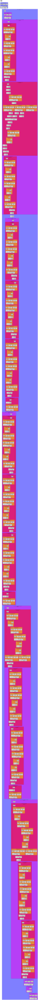

Build a graph of a pytorch based model
In this tutorial, we walk you through the steps of building a graph of a pytorch model. The example chosen will be the Dit-XL/2 Model. Note that many of these steps mirror what you see here: https://colab.research.google.com/github/facebookresearch/DiT/blob/main/run_DiT.ipynb. More details on this model can be found at https://github.com/facebookresearch/DiT?tab=readme-ov-file
The assumption is that this notebook has access to a machine with a Tenstorrent device and that tt-metal has been successfully built.
We will follow these steps: - Clone the library from https://github.com/facebookresearch/DiT.git - Download DiT-XL - Sample from the Pre-trained DiT Models and build the graph - Display the graph
Clone the library from https://github.com/facebookresearch/DiT.git
[1]:
import ttnn
!git clone https://github.com/facebookresearch/DiT.git
import DiT, os
os.chdir('DiT')
os.environ['PYTHONPATH'] = '/env/python:/content/DiT'
!pip install diffusers timm --upgrade
# DiT imports:
import torch
from torchvision.utils import save_image
from diffusion import create_diffusion
from diffusers.models import AutoencoderKL
from download import find_model
# We have a name collision in python's namespace with ttnn using models and models also existing in DiT
# So here we just append DiT to the front.
from DiT.models import DiT_XL_2
from PIL import Image
from IPython.display import display
torch.set_grad_enabled(False)
device = "cuda" if torch.cuda.is_available() else "cpu"
if device == "cpu":
print("GPU not found. Using CPU instead.")
2024-04-05 05:49:00.322 | INFO | ttnn:<module>:28 - ttnn: model cache was enabled
fatal: destination path 'DiT' already exists and is not an empty directory.
Looking in indexes: https://pypi.org/simple, https://download.pytorch.org/whl/cpu
Requirement already up-to-date: diffusers in /home/ubuntu/git/tt-metal/build/python_env/lib/python3.8/site-packages (0.27.2)
Requirement already up-to-date: timm in /home/ubuntu/git/tt-metal/build/python_env/lib/python3.8/site-packages (0.9.16)
Requirement already satisfied, skipping upgrade: filelock in /home/ubuntu/git/tt-metal/build/python_env/lib/python3.8/site-packages (from diffusers) (3.13.1)
Requirement already satisfied, skipping upgrade: Pillow in /home/ubuntu/git/tt-metal/build/python_env/lib/python3.8/site-packages (from diffusers) (9.5.0)
Requirement already satisfied, skipping upgrade: regex!=2019.12.17 in /home/ubuntu/git/tt-metal/build/python_env/lib/python3.8/site-packages (from diffusers) (2023.12.25)
Requirement already satisfied, skipping upgrade: importlib-metadata in /home/ubuntu/git/tt-metal/build/python_env/lib/python3.8/site-packages (from diffusers) (7.1.0)
Requirement already satisfied, skipping upgrade: numpy in /home/ubuntu/git/tt-metal/build/python_env/lib/python3.8/site-packages (from diffusers) (1.24.4)
Requirement already satisfied, skipping upgrade: huggingface-hub>=0.20.2 in /home/ubuntu/git/tt-metal/build/python_env/lib/python3.8/site-packages (from diffusers) (0.21.4)
Requirement already satisfied, skipping upgrade: safetensors>=0.3.1 in /home/ubuntu/git/tt-metal/build/python_env/lib/python3.8/site-packages (from diffusers) (0.4.2)
Requirement already satisfied, skipping upgrade: requests in /home/ubuntu/git/tt-metal/build/python_env/lib/python3.8/site-packages (from diffusers) (2.31.0)
Requirement already satisfied, skipping upgrade: pyyaml in /home/ubuntu/git/tt-metal/build/python_env/lib/python3.8/site-packages (from timm) (5.3.1)
Requirement already satisfied, skipping upgrade: torchvision in /home/ubuntu/git/tt-metal/build/python_env/lib/python3.8/site-packages (from timm) (0.17.1+cpu)
Requirement already satisfied, skipping upgrade: torch in /home/ubuntu/git/tt-metal/build/python_env/lib/python3.8/site-packages (from timm) (2.2.1+cpu)
Requirement already satisfied, skipping upgrade: zipp>=0.5 in /home/ubuntu/git/tt-metal/build/python_env/lib/python3.8/site-packages (from importlib-metadata->diffusers) (3.18.1)
Requirement already satisfied, skipping upgrade: fsspec>=2023.5.0 in /home/ubuntu/git/tt-metal/build/python_env/lib/python3.8/site-packages (from huggingface-hub>=0.20.2->diffusers) (2023.9.2)
Requirement already satisfied, skipping upgrade: typing-extensions>=3.7.4.3 in /home/ubuntu/git/tt-metal/build/python_env/lib/python3.8/site-packages (from huggingface-hub>=0.20.2->diffusers) (4.10.0)
Requirement already satisfied, skipping upgrade: packaging>=20.9 in /home/ubuntu/git/tt-metal/build/python_env/lib/python3.8/site-packages (from huggingface-hub>=0.20.2->diffusers) (24.0)
Requirement already satisfied, skipping upgrade: tqdm>=4.42.1 in /home/ubuntu/git/tt-metal/build/python_env/lib/python3.8/site-packages (from huggingface-hub>=0.20.2->diffusers) (4.65.0)
Requirement already satisfied, skipping upgrade: certifi>=2017.4.17 in /home/ubuntu/git/tt-metal/build/python_env/lib/python3.8/site-packages (from requests->diffusers) (2024.2.2)
Requirement already satisfied, skipping upgrade: idna<4,>=2.5 in /home/ubuntu/git/tt-metal/build/python_env/lib/python3.8/site-packages (from requests->diffusers) (3.6)
Requirement already satisfied, skipping upgrade: charset-normalizer<4,>=2 in /home/ubuntu/git/tt-metal/build/python_env/lib/python3.8/site-packages (from requests->diffusers) (3.3.2)
Requirement already satisfied, skipping upgrade: urllib3<3,>=1.21.1 in /home/ubuntu/git/tt-metal/build/python_env/lib/python3.8/site-packages (from requests->diffusers) (2.2.1)
Requirement already satisfied, skipping upgrade: sympy in /home/ubuntu/git/tt-metal/build/python_env/lib/python3.8/site-packages (from torch->timm) (1.12)
Requirement already satisfied, skipping upgrade: jinja2 in /home/ubuntu/git/tt-metal/build/python_env/lib/python3.8/site-packages (from torch->timm) (3.1.3)
Requirement already satisfied, skipping upgrade: networkx in /home/ubuntu/git/tt-metal/build/python_env/lib/python3.8/site-packages (from torch->timm) (3.1)
Requirement already satisfied, skipping upgrade: mpmath>=0.19 in /home/ubuntu/git/tt-metal/build/python_env/lib/python3.8/site-packages (from sympy->torch->timm) (1.3.0)
Requirement already satisfied, skipping upgrade: MarkupSafe>=2.0 in /home/ubuntu/git/tt-metal/build/python_env/lib/python3.8/site-packages (from jinja2->torch->timm) (2.1.5)
GPU not found. Using CPU instead.
Download DiT-XL/2 Models
[2]:
image_size = 256 #@param [256, 512]
vae_model = "stabilityai/sd-vae-ft-ema" #@param ["stabilityai/sd-vae-ft-mse", "stabilityai/sd-vae-ft-ema"]
latent_size = int(image_size) // 8
# Load model:
model = DiT_XL_2(input_size=latent_size).to(device)
state_dict = find_model(f"DiT-XL-2-{image_size}x{image_size}.pt")
model.load_state_dict(state_dict)
model.eval() # important!
vae = AutoencoderKL.from_pretrained(vae_model).to(device)
Sample from Pre-trained DiT Models and build the graph
[3]:
# Set user inputs:
seed = 0 #@param {type:"number"}
torch.manual_seed(seed)
num_sampling_steps = 250 #@param {type:"slider", min:0, max:1000, step:1}
cfg_scale = 4 #@param {type:"slider", min:1, max:10, step:0.1}
class_labels = 207, 360, 387, 974, 88, 979, 417, 279 #@param {type:"raw"}
samples_per_row = 4 #@param {type:"number"}
# Create diffusion object:
diffusion = create_diffusion(str(num_sampling_steps))
# Create sampling noise:
n = len(class_labels)
z = torch.randn(n, 4, latent_size, latent_size, device=device)
y = torch.tensor(class_labels, device=device)
# Setup classifier-free guidance:
z = torch.cat([z, z], 0)
y_null = torch.tensor([1000] * n, device=device)
y = torch.cat([y, y_null], 0)
model_kwargs = dict(y=y, cfg_scale=cfg_scale)
# Sample images:
samples = diffusion.p_sample_loop(
model.forward_with_cfg, z.shape, z, clip_denoised=False,
model_kwargs=model_kwargs, progress=True, device=device
)
samples, _ = samples.chunk(2, dim=0) # Remove null class samples
# Here is where we capture the graph into an svg!
with ttnn.tracer.trace():
samples = vae.decode(samples / 0.18215).sample
ttnn.tracer.visualize(samples, file_name=ttnn.TMP_DIR / "dit_model_graph.svg")
# Optionally Save and display images from DiT:
# save_image(samples, "sample.png", nrow=int(samples_per_row),
# normalize=True, value_range=(-1, 1))
# samples = Image.open("sample.png")
# display(samples)
2024-04-05 06:21:17.987 | INFO | ttnn.tracer:visualize:210 - Dumping graph of the model to /tmp/ttnn/dit_model_graph.svg
[3]:

Display the graph
[ ]:
from IPython.display import SVG, display
def show_svg():
return SVG(filename=ttnn.TMP_DIR / "dit_model_graph.svg")
show_svg()
[ ]: